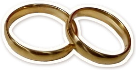
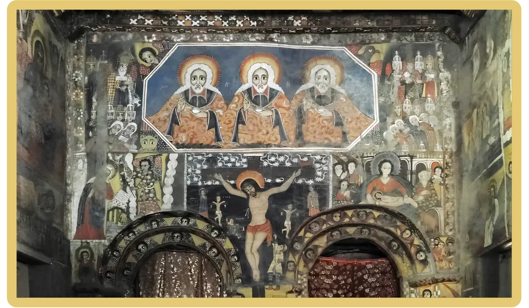
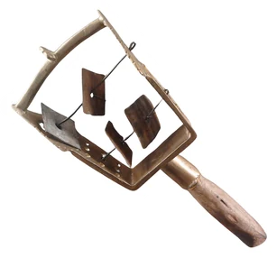
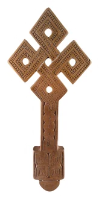
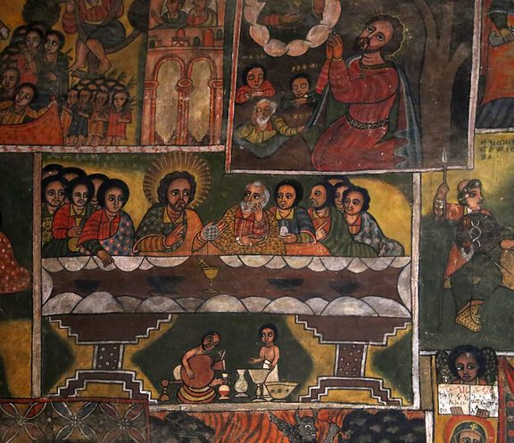
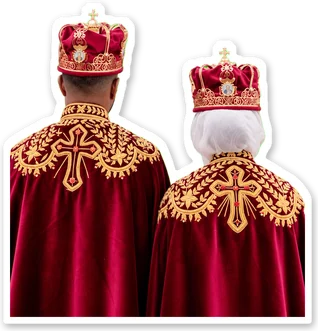
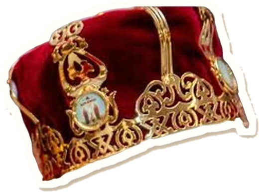
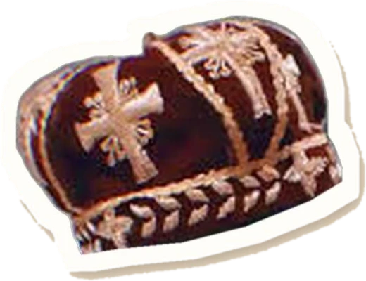
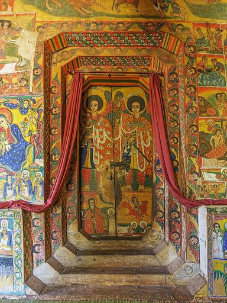

The Rings
The exchange of rings represents the endless, unbroken commitment between husband and wife. Blessed by the priest, the rings are a visible token of their lifelong pledge of love, fidelity, and unity under God’s grace.

joined in Holy Matrimony
Dn. Dr.Binyam Belachew&Betelhem Gebresilasse
11.21.26
፲፪ / ፫ / ፳፻፲፱
The Church
The EOTC is one of the six Oriental Orthodox churches that remain today, founded by Our Lord and Savior Jesus Christ through the work of His apostles.
Entering


Like the Prophet Moses, who was commanded to remove his shoes in the presence of God at the burning bush (Exodus 3:5), because, like the bush, the church is the dwelling place of God on Earth.
The images of the saints and angels remind us of the great cloud of witnesses who are alive in heaven and pray for us and protect us (Hebrews 12:1).
As a reminder that we must come prepared before Christ to honor and respect the holiness of the church (Matthew 22:11–13), and because this is the apparel of the glorified body we will receive in heaven, as Christ revealed to us (Mark 9:2–3; Revelation 6:11).
Ge’ez is the ancient liturgical language of the Ethiopian Orthodox Church. It continues to be used in worship and in the hymns of St. Yared.
The Sacrament
Holy Matrimony is one of the Seven Sacraments of the Church. Through visible rites, a man and a woman receive invisible grace, uniting them so deeply that “the two shall become one flesh…no longer two, but one flesh” (Matthew 19:5–6).
Marriage was instituted by God from the very beginning, when He created humanity as male and female. Because God joins a husband and wife together, our Lord and Savior Jesus Christ reminds us: “What God has joined together, let not man separate” (Matthew 19:4–6).
It is holy because the love and self-sacrifice between a husband and a wife serve as a living reflection of Christ’s profound love for the Church (Ephesians 5:24–29). As the Apostle Paul writes, “Marriage is honorable among all” (Hebrews 13:4).

The Mystery of

Holy Communion is truly the Body and Blood of our Lord and Savior Jesus Christ, given to us so that we may be united to Him in body, soul, and spirit (John 6:53; John 15:4). It is the fruit of the Holy Liturgy, a making present of the sacrifice of our Lord and Savior Jesus Christ by the Holy Spirit through the word of the priest.
Receiving Holy Communion together is the ultimate expression of the union of husband and wife in the Body of Christ.
Preparation includes prayer, repentance, confession, fasting, and reconciliation with others. These practices help believers approach Communion with reverence.
Holy Communion is reserved for baptized and chrismated Orthodox Christians who have prepared themselves according to the teachings of the Church.
The Service
The exchange of rings represents the endless, unbroken commitment between husband and wife. Blessed by the priest, the rings are a visible token of their lifelong pledge of love, fidelity, and unity under God’s grace.

The priest places crowns (Akilil) on the bridegroom and bride and clothes them in royal vestments (Kaba), crowning them king and queen of their new home and household. The crowns also honor their purity, commitment, and spiritual triumph in coming to Holy Matrimony.

The central rite of the service, in which special prayers ask God to bless, sanctify, and unite the couple. Through these solemn prayers the Holy Spirit bestows the invisible grace that seals their bond as one flesh in the presence of the Church.


A sign of consecration, spiritual healing, and protection. As kings and prophets were anointed in Scripture, this anointing sets the couple apart for a holy purpose, blessing their minds, hearts, and union with the joy and strength of the Holy Spirit.
Its Purpose
According to Orthodox teaching and Scripture, marriage serves these sacred purposes:
a joint spiritual journey where husband and wife help each other attain salvation, spiritual growth, and eternal life in Christ.
“Be fruitful and multiply” (Genesis 1:28).
husband and wife act as helpers and partners for one another (Genesis 2:20–22).
a sacred, committed bond of mutual affection and honor within which physical intimacy is blessed (1 Corinthians 7:2–3).
“What God has joined together, let not man separate.”Matthew 19:6
Sacred Hymns
St. Yared was a sixth-century Ethiopian saint and hymn composer. He organized the sacred music of the Ethiopian Orthodox Church and composed hymns for different seasons, feasts, and commemorations. Orthodox tradition teaches that he was granted divine inspiration to develop these beautiful forms of worship, which continue to be used today.
The instrument with metal pieces that the choir shakes is one of the oldest used in worship, with roots in biblical times.
The large drum that gives rhythm to sacred hymns. Its design reminds worshippers of the person and saving work of our Lord and Savior Jesus Christ.
The Begena is associated with prayer and meditation; the Masinko accompanies hymns and spiritual songs.
A support during long services and a symbol of the Cross, its movements recall Christ’s journey to Golgotha.
Tap an instrument to see it move. Want to learn more about these instruments? Watch on YouTube ↗
“Taste and see that the Lord is good.”Psalm 34:8

We are grateful for your presence
We are honored to have you join us today. Whether this service is familiar or entirely new to you, we hope that witnessing these ancient prayers, hymns, and traditions provides a glimpse into the rich spiritual heritage of the Ethiopian Orthodox Tewahedo Church and the sacred nature of Christian marriage.
Psst. Tap, drag, or toss the stickers around.
The church is for all people! This pamphlet only scratches the surface of the depths of Christ’s Church. You are welcome and encouraged to come back, to learn, to visit, and to be fed in body and spirit.
“Two are better than one, because they have a good reward for their toil”Ecclesiastes 4:9
Dn. Dr. Binyam Belachew & Betelhem Gebresilasse
11.21.26